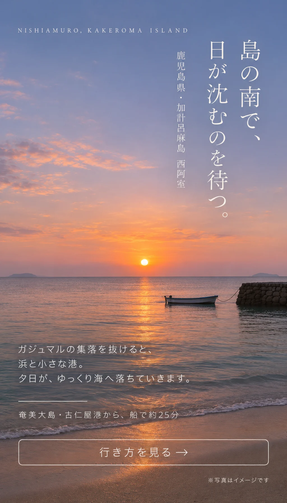
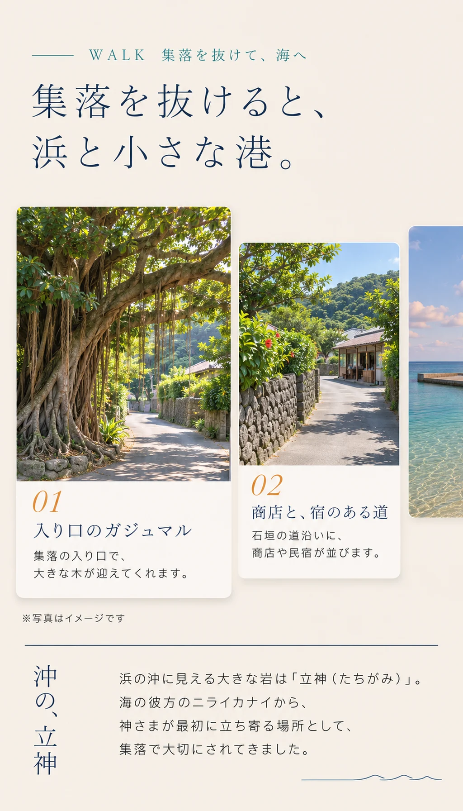
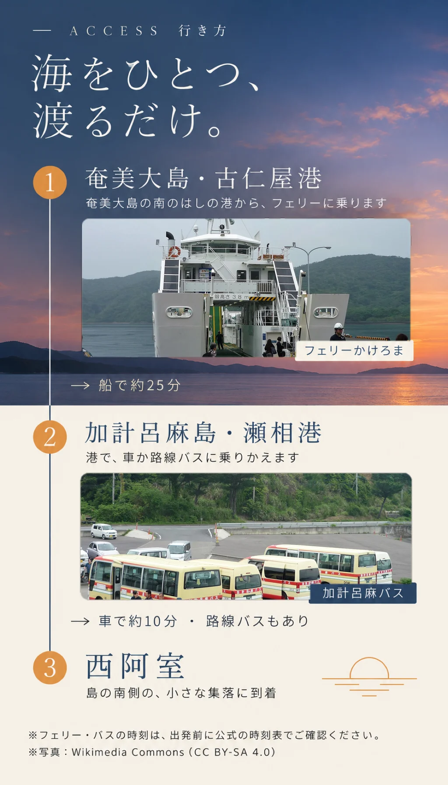
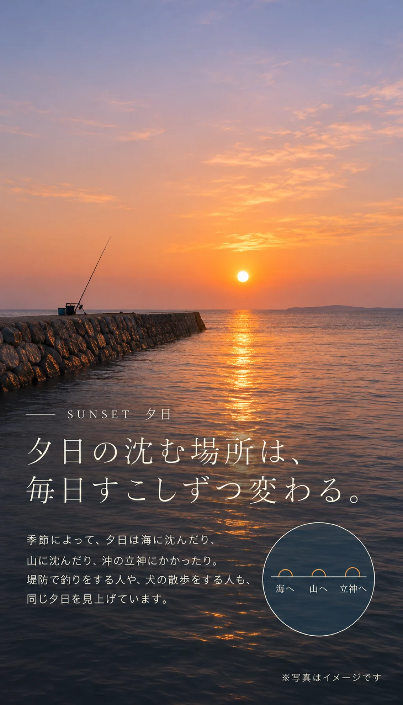
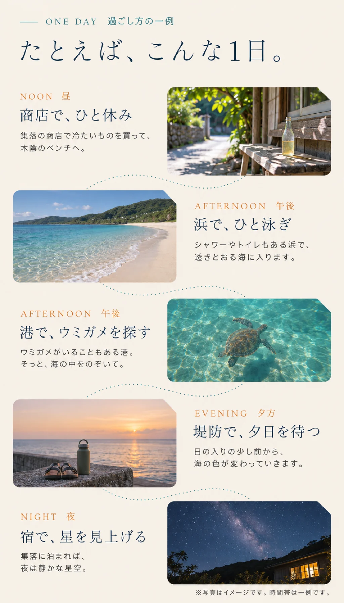
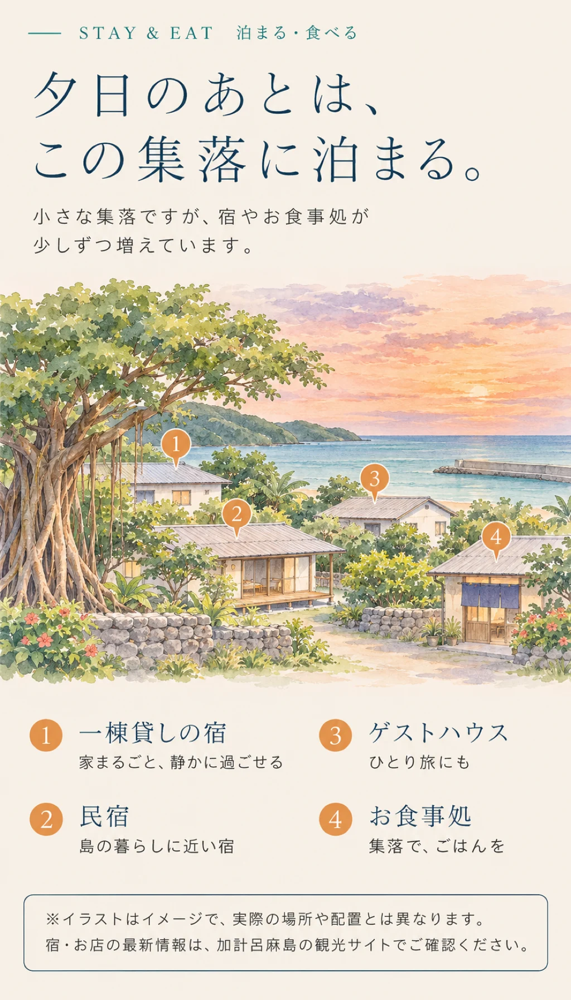
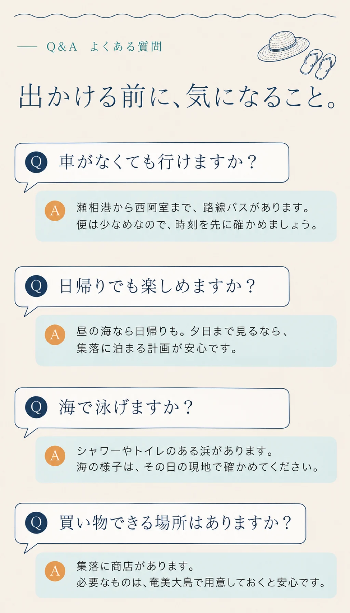
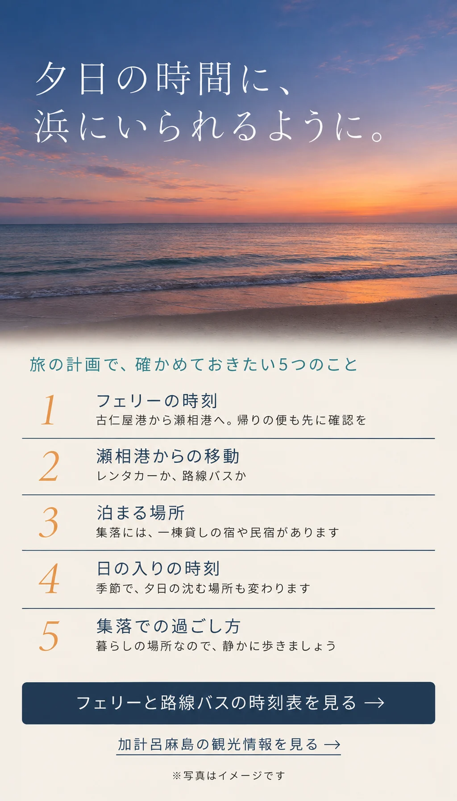

行き方を見る

瀬相港 ⇄ 西阿室の路線バス
加計呂麻バス「瀬相～西阿室」線。片道 約15分、1日4便ずつ（2026年11月24日に公式の時刻表で確認）。
- 瀬相港発：7:25／10:45／14:25／18:00
- 西阿室発：6:55／10:15／13:55／17:20
時刻は変わることがあります。出発前に必ず公式の時刻をご確認ください。



宿・お店を探す
西阿室の宿・お食事処は、加計呂麻島の観光サイトの集落案内にまとまっています。


フェリーと路線バスの時刻表を見る（加計呂麻島への行き方のページへ） 加計呂麻島の観光情報を見る（西阿室の集落案内へ）